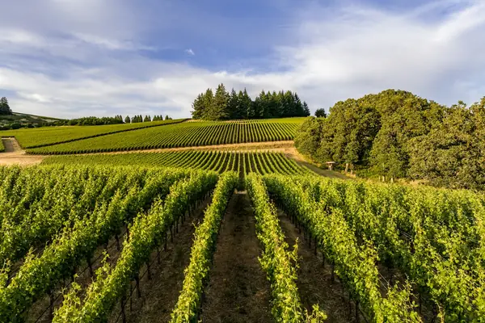

Home › Wine regions › Willamette Valley
Willamette Valley wine region

Photo: Dan Meyers on Unsplash
Elegant Oregon Pinot.
CountryUSA
Key grapesPinot Noir, Pinot Gris
SubregionsDundee Hills, Eola-Amity Hills, Ribbon Ridge, Chehalem Mountains
Notable producers in Willamette Valley
- Domaine Drouhin Oregon
- Eyrie Vineyards
- Domaine Serene
- Ponzi
- Adelsheim
Willamette Valley wines to try
Domaine Drouhin Oregon Pinot Noir Dundee Hills
Willamette Valley · Dundee Hills · Pinot Noir
Graceful Oregon Pinot: red cherry, raspberry and gentle spice.
Food: Salmon, duck
More wine regions in USA
See Willamette Valley on the wine map
Support The Wine Reference
This guide is free, with no paywall. If it helped you choose a bottle, you can buy me a glass and keep it growing.
🍷 Buy me a glass